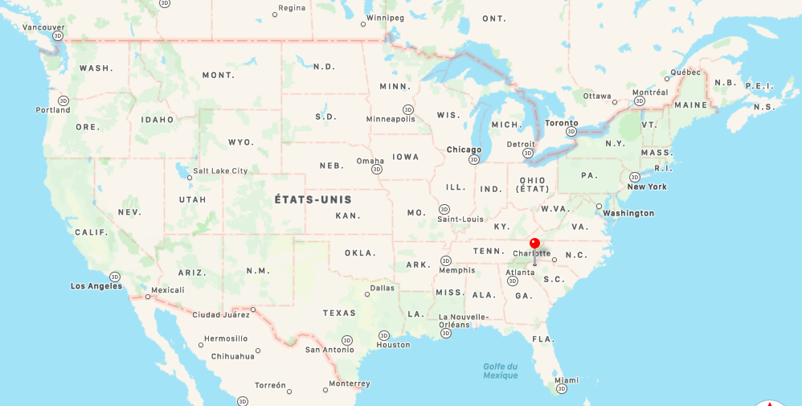

If I had to define myself through one word it would be wanderlust 🌎
Let's discover why !
🇺🇸 I was born in the United-States, in a small town called Greenville, in the state of South Carolina.

🇫🇷 My father is French
🇸🇪 My mother is Swedish
🗣 I speak these 3 languages fluently as well as German 🇩🇪 at an academic level and 'un poquito' Spanish 🇪🇸
During the holiday season, my family and I traveled to Japan to visit my brother. We went to Kyoto, Tokyo, Kamakura and Osaka. I was fascinated by the country and the culture. People are very respectful and quiet. The Japanese culture is one that I am very fond of and I wish to go back to Japan in the future.
My family and I went on a 3-week trip to Brazil a few summers ago. We visited Rio de Janeiro, Iguazù Falls, Manaus & the Amazonian Forest, Jericoacoara and Lençois. Brazil is a country with a very relaxed way of life and beautiful places and views.
My family and I visited California and Yellowstone National Park last summer. I particularly liked Yellowstone because the nature and wildlife there is very rich. I loved visitng the west coast but I still prefer the East Coast, maybe because I feel more attached to it :)
I visited Bali in April of last year. I was struck by how polluted the island was because of the tourisitc activity. Even though the people were very welcoming and the landscapes beautiful, I hope that measures can be taken to preserve this part of the world.
In 2018, I did an exchange semester in Barcelona. I absolutely loved my experience and the spanish lifestyle. I felt that there was a different atmosphere in Barcelona, very laidback and festive. 💃
I often visit Sweden, especially Stockholm, because my brother and my entire family on my mother's side live there. I am very attached to the Swedish culture and of their good living. 💌
I have been to Germany several times because it was my first language at school. I have been to Munich for an exchange program and to Berlin for a linguistic trip. The german culture reminds me of Sweden sometimes and their food & beer is delicious 🥨🍺
I currently work in Marketing in the cosmetics sector. 💄
My dream job would be to work in International Marketing or Export for a cosmetics or luxury company in New York. 🗽
🏃♀️ I have a passion for running. I will be doing the Paris Marathon in April 2020 and my goal is to run in other cities around the world. Boston, Stockholm, Tokyo and Sydney are on my list !
🛫 My next travel destination will be Mexicò 🇲🇽 I am going to visit a friend in June 2020 who is studying abroad there.